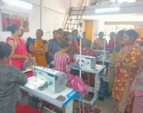
Self-employed tailoring · Narol · September 2026 ↗Project film
Sashakt Stories
See the work in action
Watch HomeFirst's published film about Project Sashakt.
Watch full film ↗Activity photographs

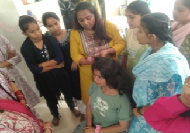
Beauty therapist training · Narol · September 2026 ↗
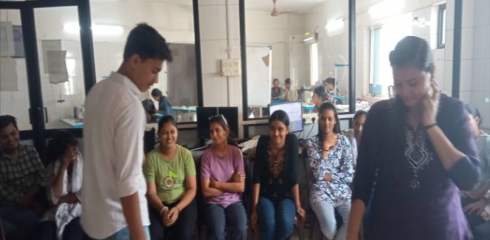
Domestic data entry operator training · Narol · September 2026 ↗
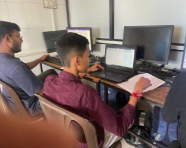
GST–Tally computer practice · Narol · September 2026 ↗
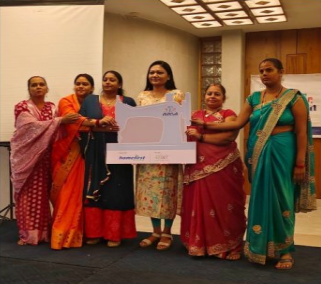
Narol graduation ceremony · September 2026 ↗
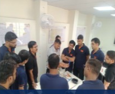
Hands-on component practice · iACE GP Ahmedabad ↗
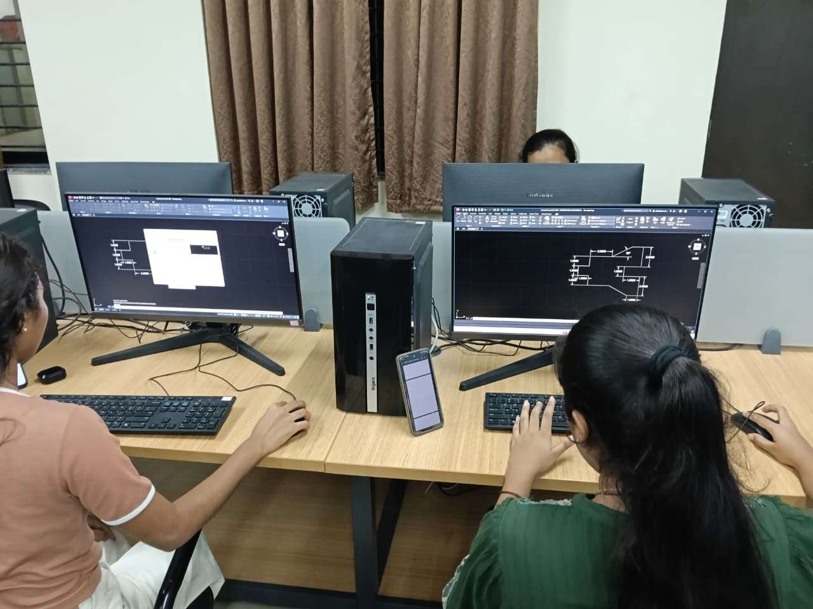
Design software training · GGP Ahmedabad · 2025–26 ↗ Medical supplies at Narol OPD · Jan 2024 ↗
Medical supplies at Narol OPD · Jan 2024 ↗ Naroda OPD · Dec 2023 ↗
Naroda OPD · Dec 2023 ↗ Narol graduation · Q2 archive ↗
Narol graduation · Q2 archive ↗ Naroda graduation · Q2 archive ↗
Naroda graduation · Q2 archive ↗
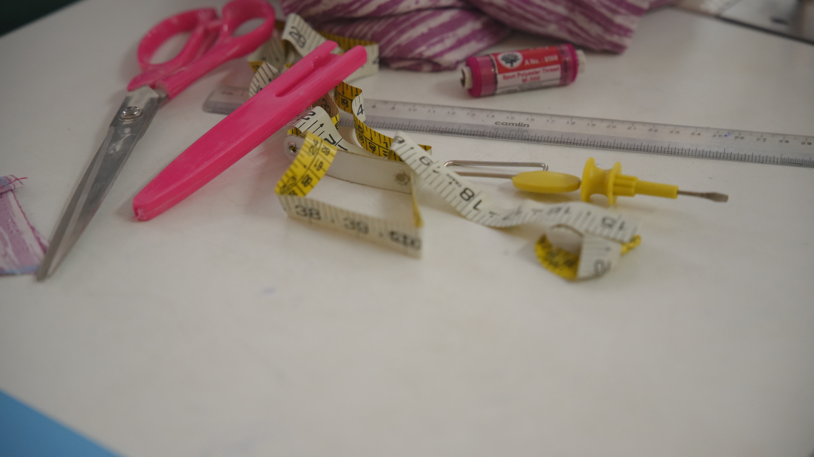
Tailoring tools · training archive ↗ AutoCAD lab · ITI Kubernagar ↗
AutoCAD lab · ITI Kubernagar ↗
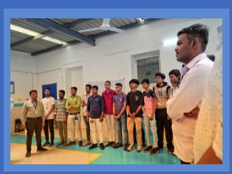
Youth technical training · Naroda archive ↗ Bal Sashakt · Narol archive ↗
Bal Sashakt · Narol archive ↗
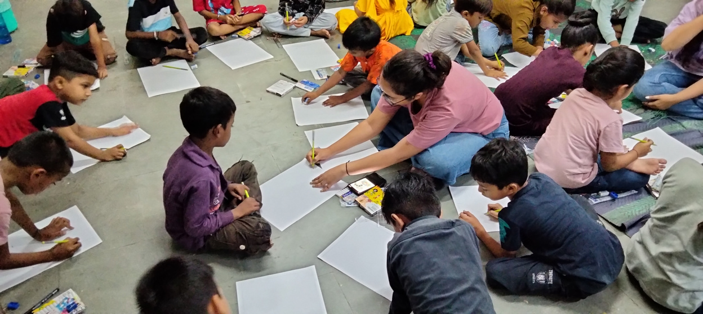
Bal Sashakt · Naroda archive ↗ Science City visit · Narol ↗
Science City visit · Narol ↗
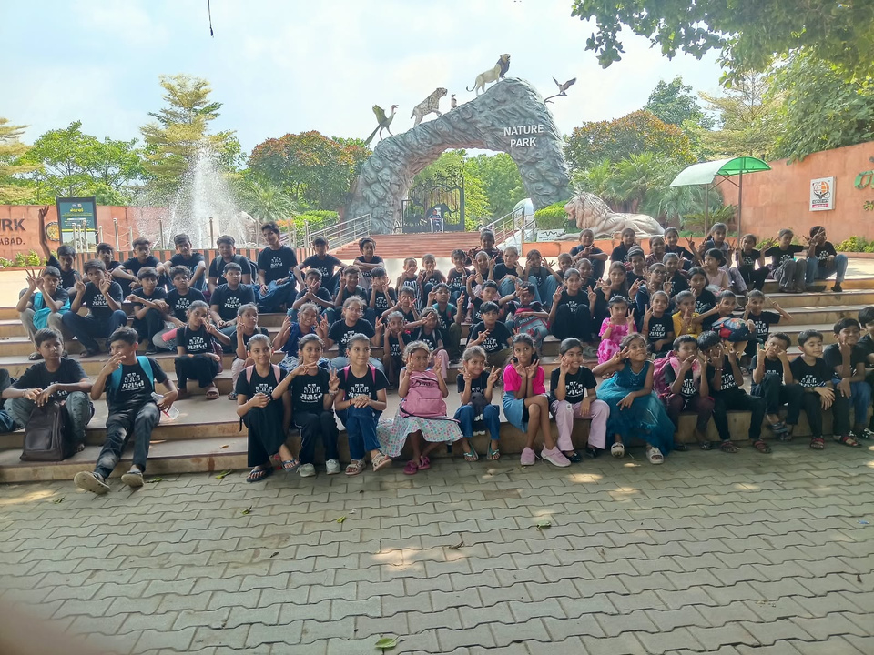
Science City visit · Naroda ↗
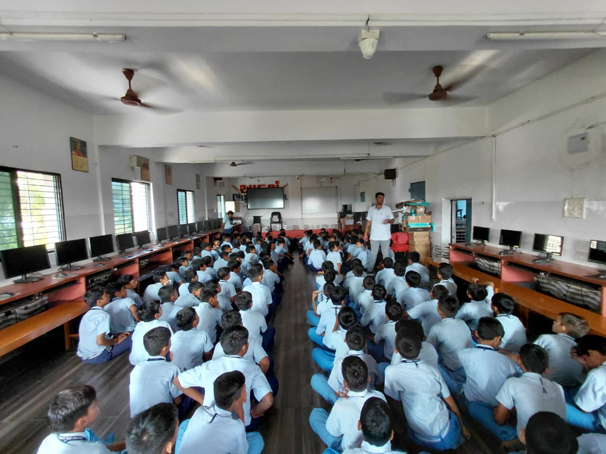
Adarsh School · Lambha ↗
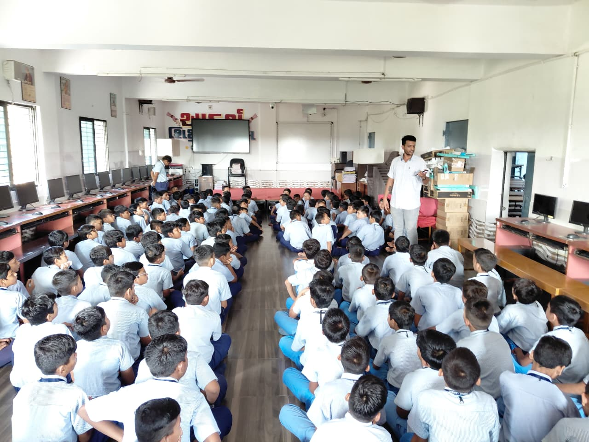
School session · Lambha ↗
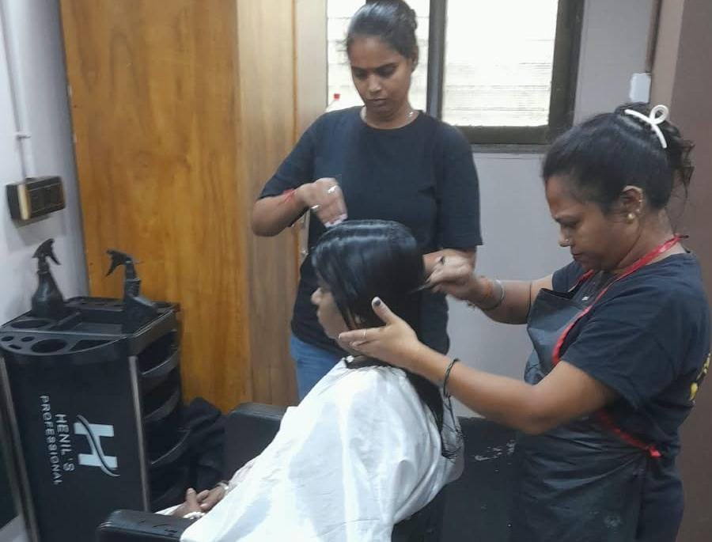
Diva Salon practice · Naroda ↗
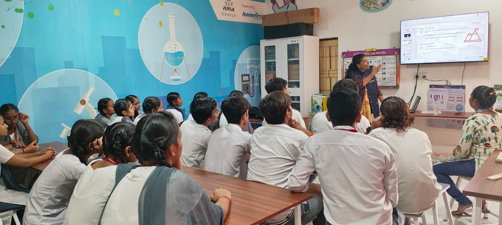
Financial literacy session · Sep 2024 ↗Photographs are from the project activity archives. Dates and locations are shown where known.